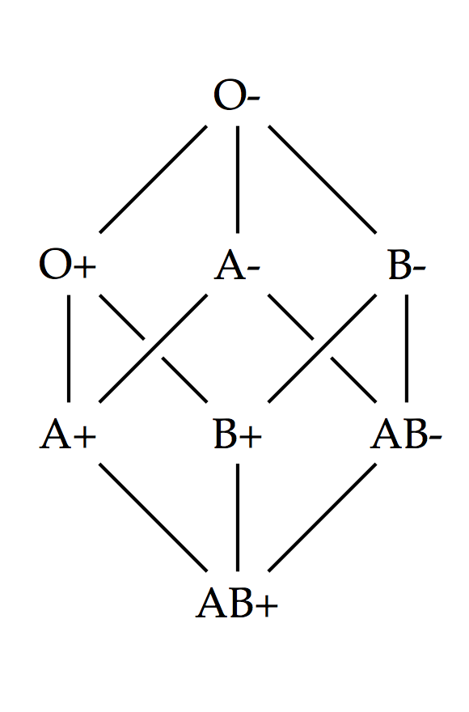
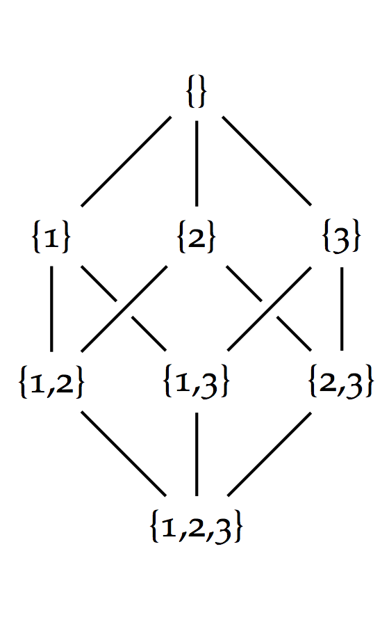

Today is Mother's Day and I had the good fortune to spend the afternoon with my mother, my father, and my sister. We spoke for a while about donating blood and blood types. I should stop now and encourage you, dear reader, to donate blood. I've done it a few times, and it feels great. You sit in a chair for five minutes and in return you feel great for saving lives! I'm always on the look out for easy ways to change the world.
While discussing blood donation, blood types came up. As you, dear reader, are probably aware, the O type can give to any other type. The A and B types can give to AB types. AB can only give to themselves. This system of classification is known as the ABO blood group system. In addition, each blood type can be labeled positive or negative. Positively labeled blood types cannot give to negatively labeled blood type.
I realized that Hasse diagrams would be a great way to explain the donation relationships between blood types. A Hasse diagram visually depicts the relationships of a partially ordered set. A partially ordered set is1 just a set of things and a transitive relationship. A relationship such as \(\le\) is called transitive if \(A \le B\) and \(B \le C\) implies \(A \le C\). We can check that \(\le\), the less-than-or-equal-to operation on numbers, actually is transitive by trying it with some real values. Let's set \(A\) to 3, \(B\) to 5, and \(C\) to 15. $$ 3 \le 5 $$ Yep, that's true. $$ 5 \le 15 $$ Also true. $$ 3 \le 15 $$ Definitely true! Suppose we didn't know that \(3 \le 15\) was true. If we knew that \(3 \le 5\) and \(5 \le 15\), we could prove that \(3 \le 15\) because we knew the previous two inequalities were true and we knew that \(\le\) is transitive.
The “can give blood relationship” is also transitive. Consider, for example, a person with the O blood type. This person can give blood to someone with the A blood type. We could write this as: $$ O \ge A $$ Note that I'm using the symbol \(\ge\) to mean “can give blood”, not to mean greater-than-or-equal-to! Likewise, a person with the A blood type can give blood to someone with the AB blood type: $$ A \ge AB $$ The person with the O blood type is known as a universal donor because they can give blood to anyone. Of course, this includes giving blood to people with the AB blood type: $$ O \ge AB $$ The transitivity is very clear when the three inequalities are written on the same line as they are here: $$ O \ge A ,\; A \ge AB ,\; O \ge AB $$ We often write the first two inequalities as one inequality with two \(\ge\)'s: $$ O \ge A \ge AB $$ In total, there are four important inequalities which describe the ABO blood group system: $$ O \ge A \\ O \ge B \\ A \ge AB \\ B \ge AB $$ Which we can read as:
The top most element of the picture is the O blood type, the universal donor. The bottom most element of the picture is the AB blood type, the universal receiver. If you follow the lines downwards, you can read off the “can give blood to” relationships. If you follow the lines upwards, you can read off the “can receive blood from” relationships.
A keen reader would notice that I've completely dropped the positive/negative distinction. We should split each blood type into a positive and a negative one. The blood-giving relationship requires that negative blood types can give blood to positive blood types, but not the other way around. The diagram now looks like:
We can still read the blood-giving relationships off of the diagrams! For example, “B- can give blood to B+” and “B+ can give blood to AB+”. We can also deduce that “B- can give blood to AB+” by the transitivity of the previous two relationships. Indeed, in the Hasse diagram we can follow any number of upward edges to find a potential donor.
There's one more cool thing! If we knew nothing about why these blood types existed, we could still deduce something about them by placing them in this diagram. The ABO blood type Hasse diagram is isomorphic to this diagram:
This is the Hasse diagram of the superset relationships between sets of the numbers 1, 2, and 3. In this diagram, {} means the empty set, which is to say a set with nothing in it. The notation {1,3} means the set containing the numbers 1 and 3. The notation {1} means the set containing only the number 1. The set {1,3} is a super set of {1} because every member of the later (just 1) is also a member of the former. Likewise, the set {1,2,3} is a superset of the set {1,3}.
The blood type diagram and this superset diagram have the same shape. The AB+ type corresponds to {1,2,3}. The O+ type corresponds to {1}. The O- type corresponds to {}. And so on.
This correspondence and similarity in shape is no coincidence! The positive-ness of a blood type means that people with that blood type have a special antigen that other blood types do not have. Likewise, the blood types A and B each have their own special antigen. The blood type AB has both the A antigen and the B antigen. A person cannot receive blood which has antigens that he or she does not have. An O- person's body would attack the blood from an O+ person because it has the positive antigen.
These sets of numbers correspond to having or not having the antigens. Since O+ corresponds to the set {1} we'll say that the number one corresponds to the positive antigen. Likewise, B+ corresponds to the set {1,3} so we'll say the number three corresponds to the B antigen. Finally, the number two corresponds to the A antigen. Of course, the AB+ blood type must correspond to the set {1,2,3} because it has all the antigens.
If we only knew there was a “can give blood” relationship, but didn't know about antigens, we could use Hasse diagrams to help understand the problem. The Hasse diagram suggests that there are three distinct elements that control the “can give blood” relationship. We could then perform real biological tests to determine if this hypothesis was true.
In fact, mapping observations to a mathematical framework helped direct the search for fundamental physical particles! When trying to understand the relationships between an ever growing collection of so-called fundamental particles, the physicist Murray Gell-Mann realized that they corresponding to basic mathematical objects called symmetry groups. This realization led to the prediction that a new particle must exist with certain properties. A couple years later physicists discovered exactly that particle!